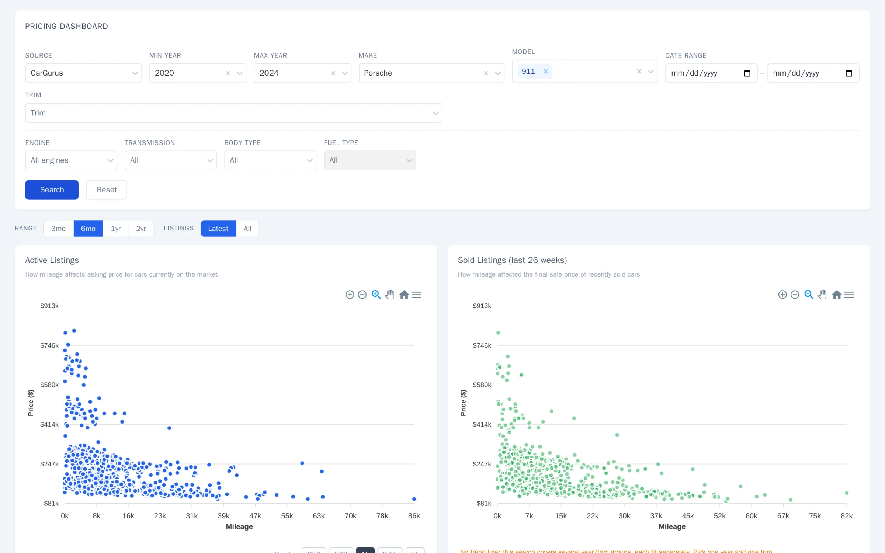
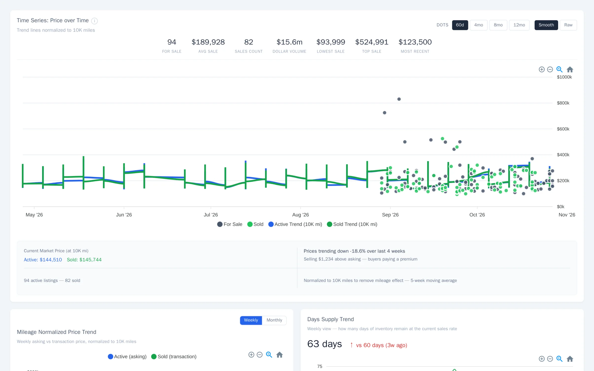
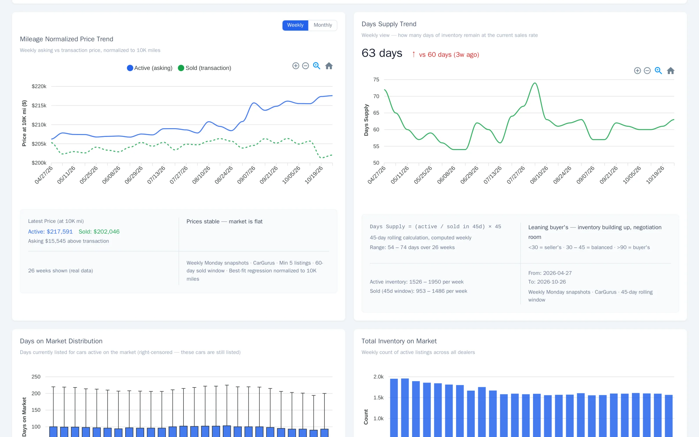
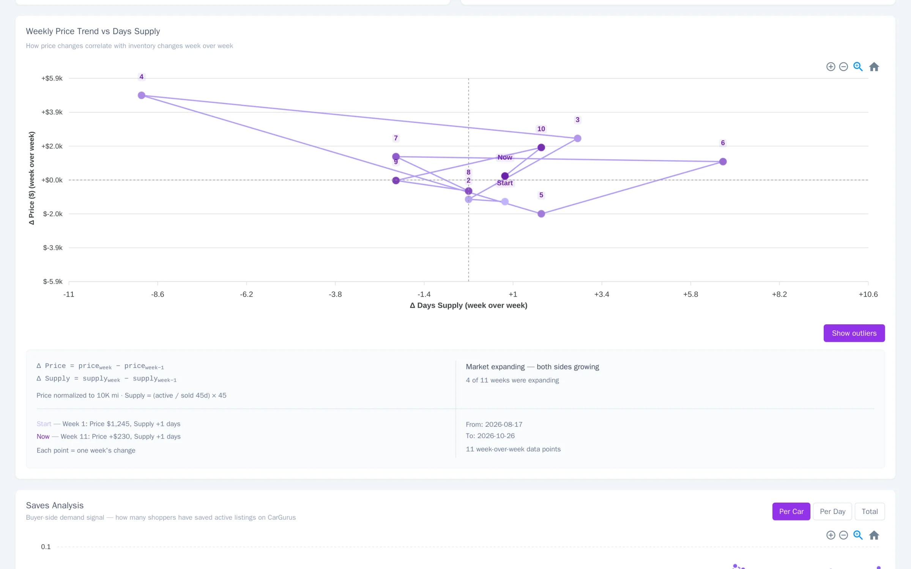
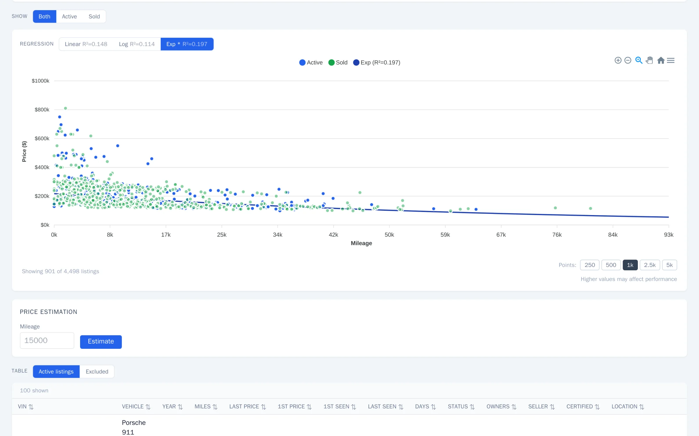
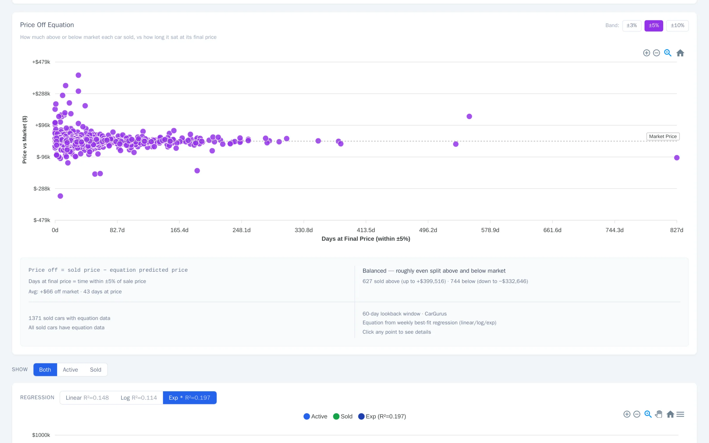
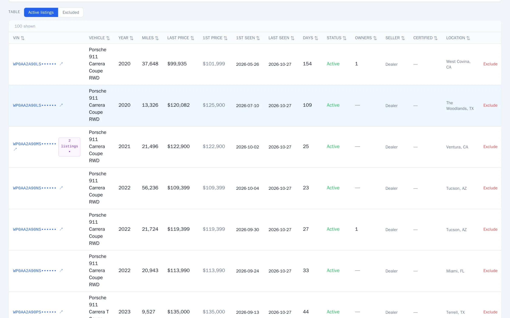

Rebuilding the data platform behind Motorenn's pricing dashboard
Motorenn sells luxury and exotic cars in the US. Its team prices cars with a private dashboard built on market data from five listing and auction sites. I built that platform: the warehouse, the hourly pipeline, the API and the dashboard.
Sole data engineer, end to endPostgreSQL · Python · FastAPI · React
The production dashboard, searching the Porsche 911 from 2020 to 2024. Recorded October 2026.
Where it started
A legacy scraper (Node.js, MySQL 8.0) wrote every price it saw into two tables. One of them, scraped_prices, held 1.514 billion rows and 357 GB. There was no analytical layer on top, and the few charts that existed grouped by a column with no index, so they were slow.
Three things shaped every decision after that. The scraper could not stop, so I built next to it while it kept writing. The source was read-only for me, and adding an index to a 357 GB live table was not an option, so every read had to go through the primary key. And the first pipeline ran on a 4 GB server, so memory mattered as much as speed.
motorenn.com, the public site.

The pricing dashboard behind it. This, and everything under it, is what I built.
What the dashboard answers
Each chart answers one question a buyer or seller asks about a model. Real screens from production, Porsche 911, VINs masked.
What is out there?
Pick a source, make, model and years. Every active listing and every recent sale is plotted against mileage.
Where is the price going?
Asking and sold trends over time, normalized to 10,000 miles so cars with different mileage compare fairly.
How fast does it sell?
Days of supply each week: active inventory against the recent pace of sales. When it rises, buyers have room to negotiate.
Do price and supply move together?
Each point is one week's change in price against its change in supply, connected in order.
How much does mileage explain?
Linear, log and exponential fits of price against mileage, each with its R², so nobody has to trust a single line.
Did it sell above or below the market?
Every sold car against the weekly price model, and how long it sat at its final price.
Which cars, exactly?
The table behind the charts. A relisted car groups its listings under one VIN instead of counting twice.






Following one car through the warehouse
A real 2024 Porsche 911 GT3, with its real prices.
Jun 29, 2024
Listed on CarGurus at $266,365. The pipeline records its price every time it sees the car.
294 sightings
Each sighting is a row in price_observations, which holds 1.62 billion rows today. For pricing, what matters is when the price moved: 25 times for this car.
2024 to 2026
It left in July 2024, came back in October 2025, and again in January 2026, when it also showed up on Cars.com and AutoTrader. Each listing period is keyed on VIN, source and event number, so a relist becomes a new event rather than a price glitch.
Aug 17, 2026
Every week the pipeline fits a price model per car model and year. It estimated this car at $273,493.
Aug 22, 2026
It disappeared from every source at $275,000, 0.5% above the model. The dashboard infers a sale from that, so I measure how often the inference is wrong: in an August audit, 5% of "sold" cars were still listed. I checked this one directly, and the listing has been removed.
2024 Porsche 911 GT3 CoupeWP0AC2A99RS26••••
CarGurusCars.comAutoTrader
Price history as a table
Date
Source
Asking price
How it is built
The legacy CarGurus scraper still writes to MySQL, and an hourly incremental ETL moves only what changed into PostgreSQL. The four newer sources write to the warehouse directly. Everything downstream reads from one place.
Decisions that mattered
Extracting changed cars: 39 minutes to 15 seconds
The listing extraction phase took 39 minutes to pull the changed cars out of a 50-million-row table. I pushed the changed IDs into a temporary table on the MySQL side and joined there, which brought it to 15 seconds. A server-side cursor streams the result so memory stays flat.
Reading 1.5 billion rows without an index
Any filter on the column I needed was a full scan. The ETL walks the table by primary-key ranges in batches and keeps a high-water mark, so each hour reads only what is new.
The join that ran out of memory
A range predicate (BETWEEN) in the price join exhausted the server's memory and hung for twelve hours. Rewriting it as an equality join on VIN, source and event number fixed it.
Reloads without downtime
A full reload builds shadow tables and swaps them in with one transaction, so the dashboard never reads a half-loaded table.
Checking what the AI writes
I build with Claude Code and run a multi-agent code review before merging. One review caught an R² comparison made across two different spaces, a linear fit against a log fit, before it reached the regression chart above. The agents write a lot of the code; the schema, the decisions and the checks stay with me.
By the numbers
Read from production on October 27, 2026, unless noted.
1.62 billion
rows in price_observations, 250 GB
73.8 million
listing events, 59 GB
5
sources: CarGurus, Cars.com, AutoTrader, Bring a Trailer, Cars & Bids
2 min
median hourly ETL run; heavy price batches take up to 1.5 h (p90 84 min, 131 runs, Oct 20–26)
11
Grafana alert rules routed to Slack
5%
of inferred sales still listed when audited (August 11, 2026)
What I take from it
Start from what the data can actually support. The source table had no usable index and could not be changed, and that one constraint decided most of the pipeline's design.
Measure the parts that are inferred. A car that disappears is not always sold, so the dashboard's "sold" figure comes with a known error rate instead of a guess.
Keep one source of truth downstream. Five sources with different shapes land in one warehouse, and every chart reads from there.